When a network is loaded, Cytoscape will look something like the image below:
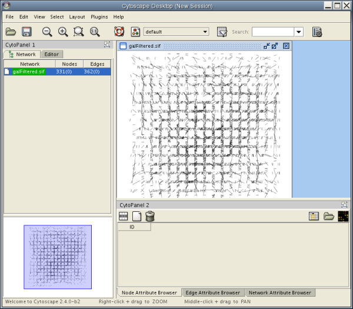
The main window here has several components:
The network management and attribute browser panels are dockable tabbed panels known as CytoPanels. You can undock any of these panels by clicking on the Float Window control in the upper-right corner of the CytoPanel.
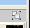 If you select this control, e.g. on the attribute browser panel, you will now have two Cytoscape windows, the main window, and a new window labeled CytoPanel 2, similar to the one shown below.
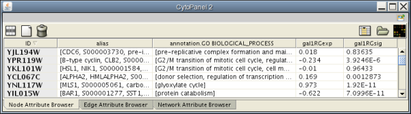 Note that CytoPanel 2 now has a Dock Window control. If you select this control, the window will dock onto the main window.
Cytoscape also has an editor that enables you to build and modify networks interactively by dragging and dropping nodes and edges from a palette onto the main network view window. The Node shapes and Edge arrows on the palette are defined by the currently used Visual Style. To edit a network, just select the Editor tab on CytoPanel 1. An example of an editor, with the palette contained in CytoPanel 1 and defined by the BioMoleculeEditor Visual Style, is shown below.
File The File menu contains most basic file functionality: File → Open for opening a Cytoscape session file, File → Save for saving a session file, File → Import for importing data such as networks and attributes, File → Export for exporting data and images. File → Print allows printing. File → Quit closes all windows of Cytoscape and exits the program. File → New creates a new network, either blank for editing, or from an existing network.
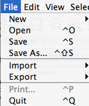
Edit The Edit menu contains Undo and Redo menu items which undo and redo edits made in the Attribute Browser and the Network Editor ONLY. Undo and Redo support do NOT work for other actions in Cytoscape such as layout.
There are also options for creating and destroying views (graphical representations of a network) and networks (the network data – not yet visualized), as well as an option for deleting selected nodes and edges from the current network. All deleted nodes and edges can be restored to the network via the Edit → Undo menu item. The Edit Menu also supports Preferences editing for properties and plug-ins via a Preferences Dialog.
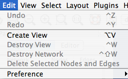
View The View menu allows you to display or hide the network management panel (CytoPanel 1), the attribute browser (CytoPanel 2), the Network Overview (in CytoPanel 1), and the Advanced window. The View menu also allows you to open the VizMapper and lock the VizMapper. The View → Desktop provide further control over the various CytoPanels.
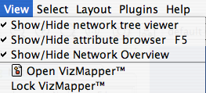
Select The Select menu contains different options selecting nodes and edges. It also contains the Select → Use Filters option which allows filters to be created which can be used to automatically select portions of a network whose node or edge attributes meet a filtering criterion.
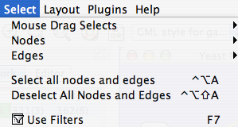
Layout The Layout menu has an array of features for organizing the network visually. The top of the menu contains tools for manipulating sections of networks. These tools include scale, rotate, distribute, and align. The bottom section of the menu lists a variety of layout algorithms which automatically lay a network out.
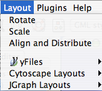
Plugins The Plugins menu has menu items or choices added by plugins that have been loaded, such as "Import BioPAX Document from file". Depending on which plugins are loaded, the plugins that you see may be different than what appear here.
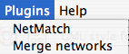
Table 5.
Note: A list of available Cytoscape Plugins with descriptions is available online at: http://cytoscape.org/plugins2.php |
Help The Help menu allows you to launch the online help viewer and browse the table of contents (Contents…). The “About…” menu item displays information about the running version of Cytoscape.
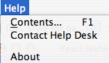
Cytoscape 2.3 allows multiple networks to be loaded at a time, either with or without a view. A network stores all the nodes and edges that are loaded by the user and a view displays them. You can have many views of the same network. Networks (and their optionally associated views) can be organized hierarchically.
An example where a number of networks have been loaded and arranged hierarchically is shown below:
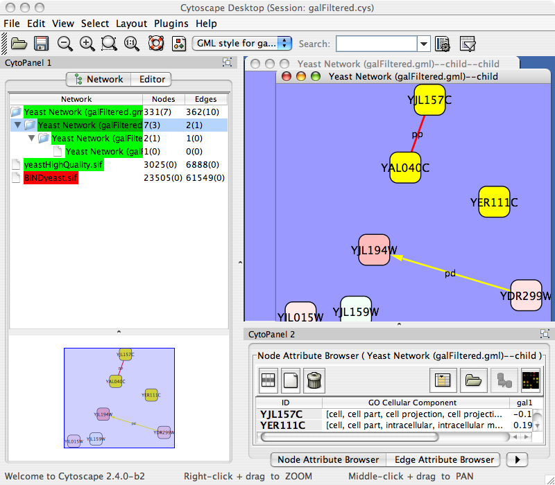
The network manager (top-right tree view in CytoPanel 1) shows the networks that are loaded. Clicking on a network here will make that view active in the main window, if the view exists (green highlighted networks only). Each network has a name and size (number of nodes and edges), which are shown in the network manager. If a network is loaded from a file, the network name is the name of the file.
Some networks are very large (thousands of nodes and edges) and can take a long time to display. For this reason, a network in Cytoscape may not contain a ‘view’. Networks that have a view are highlighted in green and networks that don’t have a view are highlighted in red. You can create or destroy a view for a network by right-clicking the network name in the network manager or by choosing the appropriate option in the edit menu. You can also destroy previously loaded networks this way. In the picture above, seven networks are loaded, six green ones with views and one red one without a view.
Certain operations in Cytoscape will create new networks. If a new network is created from an old network, for example by selecting a set of nodes in one network and copying these nodes to a new network (via the File → New → Network option), it will be shown as a child of the network that it was derived from. In this way, the relationships between networks that are loaded in Cytoscape can be seen at a glance. Networks in the top part of the tree in the figure above were generated in this manner.
The available network views are also arranged as multiple, overlapping windows in the network view window. You can maximize, minimize, and destroy network views by using the normal window controls for your operating system.
The network overview window shows an overview (or ‘bird’s eye view’) of the network. It can be used to navigate around a large network view. This feature can be turned on or off via the View → Show/Hide Network Overview menu. The blue rectangle in the overview window shown below can be dragged with the mouse to navigate to a part of the network. The size of the navigation rectangle depends on the size of the active view and the zoom level of the view. The rectangle is smaller if the view is zoomed in and larger if zoomed out.
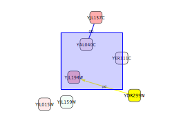